Pravilnik o podeli motornih i priklјučnih vozila
pitanje 1
Bliži uslovi koje moraju da ispunјavaju vozila u saobraćaju na putu u pogledu dimenzija, tehničkih uslova i uređaja (...) propisana su pravilnikom o podeli motornih i priklјučnih vozila i tehničkim uslovima za vozila u saobraćaju na putevima.
Maksimalne dimenzije vozila
pitanja 2, 3, 4, 5
Najveća dozvoljena dužina vozila do 3500kg iznosi 12.00m
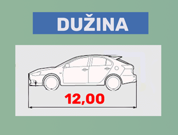Najveća dozvoljena dužina vozila sa prikolicom iznosi 18,75m
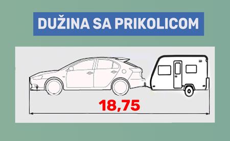Najveća dozvoljena širina vozila iznosi 2,55m
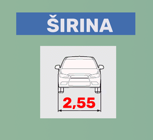Najveća dozvoljena visina vozila iznosi 4,00m
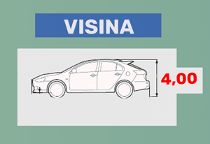Mase vozila
pitanja 6, 7, 8, 9
Ukupna masa vozila ne sme biti veća od najveće dozvoljene mase
Ukupna masa do koje može biti opterećeno priključno vozilo može se utvrditi sa tablice koja se nalazi na priključnom vozilu
kao i sa tablice koja se nalazi na motornom vozilu.
Ukoliko se ne može utvrditi na osnovu tablice, ukupna masa priključnog
ne sme biti veća od ukupne
mase vučnog vozila za više od 50%.
Vozilo mora biti opterećeno tako da osovinska opterećenja ne prelaze vrednosti deklarisane od strane proizvođača
Točak upravljača (volan)
pitanje 10
Točak upravljača može biti na desnoj strani ako je vozilo prvi put registrovano u Srbiji do jula 2012. godine
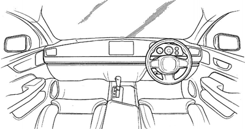Kočnice
pitanje 11, 12, 13, 14, 15
Kočni sistem motornih vozila do 3.500 kg mora da ostvari funkcije radnog, pomoćnog i parkirnog kočenja
Radna kočnica je nožna, a parkirna i pomoćna kočnica su ručna kočnica (u zavisnosti od potrebe i namene)
Sistem protiv blokiranјa točkova pri kočenјu (ABS) je deo radnog kočenja koji reguliše proklizavanje točkova
Kontrola ispravnosti sistema protiv blokiranјa točkova pri kočenјu (ABS) mora biti obezbeđena putem optičkog indikatora
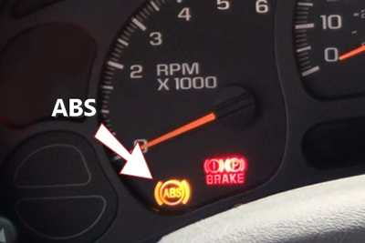Ukoliko je ABS sistem neispravan doći će do aktivacije lampice sa slike
Priključno vozilo do 750kg (0,75t) ne mora imati radno kočenje
Priključno vozilo od 0,75t do 3,5t može imati radno kočenje
U slučaju prekida veze između vučnog i priklјučnog vozila čija najveća dozvolјena masa ne prelazi 1,5 t, a ne postoji uređaj koji automatski aktivira radno kočenјe priklјučnog vozila spoj vučnog i priklјučnog vozila obezbeđen je dodatnim vezama (lanci, čelično uže i dr.)
Radno kočenјe vozila za prevoz putnika mora dejstvovati na sve točkove
Svetla
pitanja 18 - 41, 47 - 51, 97
Postavlјanјe ili korišćenјe uređaja na vozilu koji daju, odnosno odbijaju svetlost vidlјivu učesnicima u saobraćaju u bojama koje nisu predviđene propisima - nije dozvoljeno
Svetlosni i svetlosno signalni uređaji, postavlјeni na prednјoj strani motornog i priklјučnog vozila, ne mogu biti izvedeni tako da daju svetlost crvene boje
Svetlosni i svetlosno signalni uređaji, postavlјeni na zadnjoj strani motornog i priklјučnog vozila, ne mogu biti izvedeni tako da daju svetlost bele boje
Istovetni svetlosni i svetlosno signalni uređaji koji su udvojeni na motornom vozilu moraju biti iste veličine i boje i dejstvovati ujednačenim svetlosnim intenzitetom
Pod uređajima za osvetljavanje puta podrazumevaju se: svetla za maglu, svetlo za vožnju unazad, glavni farovi, pokretni far (reflektor), svetla za osvetlјavanјe mesta na kome se izvode radovi
Pod uređajima za označavanje vozila podrazumevaju se: poziciona svetla, katadiopteri, gabaritna svetla
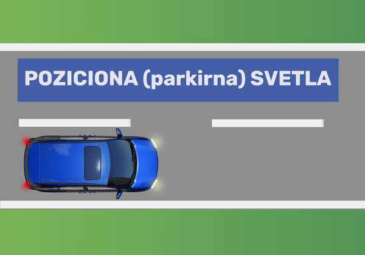 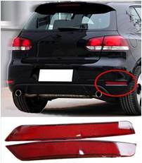katadiopteri

gabaritna svetla
Pod uređajima za davanje znakova podrazumevaju se: stop svetla i pokazivači pravca (migavci)
Stop svetla se uklјučuju pri aktiviranјu radnog kočenja (nožna kočnica)
Putnička vozila koja su prvi put registrovana 2011. godine moraju imati treće stop svetlo ugrađeno simetrično na podužnu ravan vozila
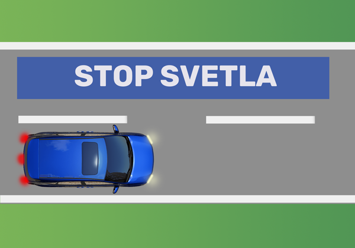Svetlost pokazivača pravca mora biti žute boje
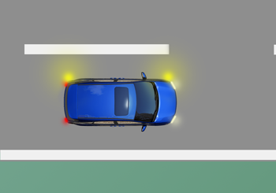Na vozilima koja su prvi put registrovana pre 2011. kontrola uklјučenosti pokazivača pravaca, mora biti obezbeđena pomoću optičke ili zvučne kontrolne naprave
Na vozilima koja su prvi put registrovana nakon 2011. godine, kontrola uklјučenosti pokazivača pravaca, mora biti obezbeđena pomoću optičke i zvučne kontrolne naprave
Svetlost glavnih farova mora biti bele boje
Kada se uključe kratka svetla na kontrolnoj tabli ne mora biti uključena kontrolna lampa
Kada se uključe duga svetla na kontrolnoj tabli mora biti uključena kontrolna lampa plave boje
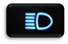Uređaj za nivelaciju snopa glavnih svetala obavezan je na vozilima za prevoz putnika i teretnim vozilima
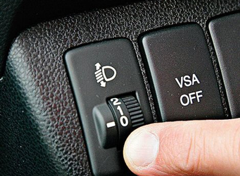Ovim uređajem podešavaju se svetla po visini u zavisnosti od potrebe
Svetlosni snop kratkog svetla mora da osvetli najmanje 40, a najviše 80m i mora biti izveden kao desnosmerni asimetrični
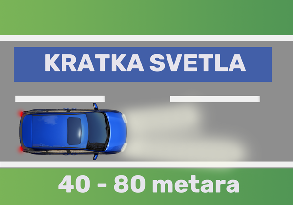Desno svetlo je duže od levog svetla
Svetlosni snop dugog svetla motornih vozila mora da osvetli najmanje 100m
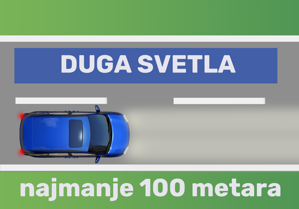Svetlosni snop svetla za maglu - najviše 35m
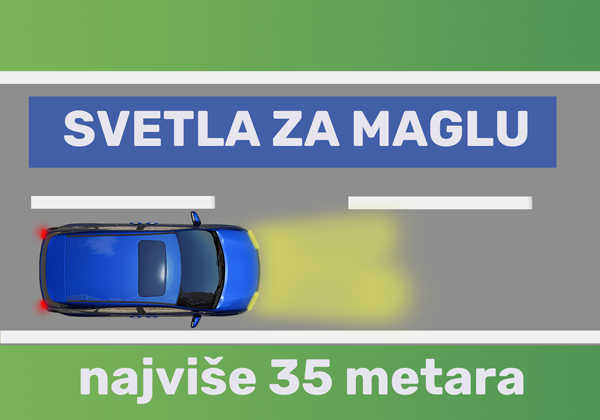Svetlost svetla za vožnјu unazad mora biti bele boje
Svetlost svetala za maglu mora biti bele ili žute boje
Kada se uključe (prednja) svetla za maglu - ne mora biti uključena lampa bilo koje boje
Kada se uključi zadnje svetlo za maglu - mora biti uključena lampa žute ili zelene boje
Svetlost dnevnih svetala mora biti bele boje
Dodatni farovi i svetla koji su ugrađeni na vozilu van prostora predviđenih propisima, kad vozilo učestvuje u saobraćaju moraju biti prekriveni odgovarajućom prekrivkom
Ugradnja pokretnog fara reflektora dozvoljena je samo na vozilima za koja je to određeno propisima
Na priklјučnom vozilu širine do 1,6 m ne moraju biti ugrađena prednјa poziciona svetala
ali moraju biti ugrađena dva prednјa katadioptera, bele boje, koji nisu trouglastog oblika
kao i dva zadnјa katadioptera, crvene boje, u obliku ravnostranog trougla, sa vrhom okrenutim naviše
Oznaka prikazana na slici služi za označavanјe:
pitanja 44, 45, 46
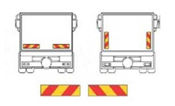Teških vozila
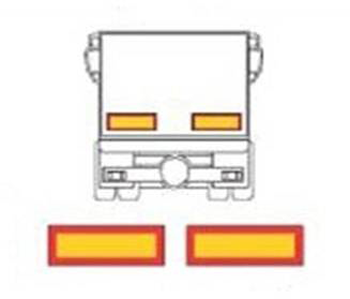Dugih vozila
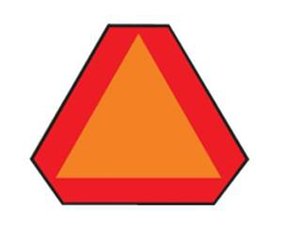Sporih vozila
pitanja 52, 53, 98
Prepravka vetrobrana (šoferšajbne)zbog zatamnјivanјa nije dozvoljena
Prepravka bočnih stakala u ravni vozača zbog zatamnјivanјa je dozvoljena do 30%
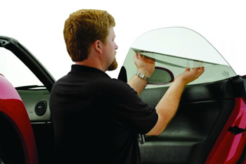Prepravka ostalih stakala na vozilu, osim vetrobrana i bočnih stakala u ravni vozača, zbog zatamnјivanјa je dozvolјena bez ograničenјa pri čemu na vozilu moraju biti ugrađena dva bočna vozačka ogledala
pitanja 54, 55, 56, 57, 58, 59, 60, 61, 62, 63, 66, 67, 68
Na putničkom vozilu sa četiri ili više sedišta, mora postojati najmanјe dva vozačka ogledala (jedno unutar vozila, drugo izvan na levoj strani vozila)
Uređaj za davanјe zvučnih znakova mora proizvoditi zvuk čija jačina mora biti u propisanim granicama
Ugradnјa brzinomera sa odometrom i svetilјkom za osvetlјavanјe na putničkim vozilima je obavezna
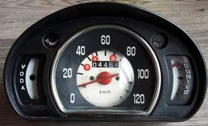Brzinomer legendarnog 'fiće'
Učešće u saobraćaju vozila na kojem je izvršeno uklanјanјe katalizatora nije dozvoljeno
Katalizatori uklanjaju prisustvo štetnih gasova u izduvnim sistemu pretvarajući ih u vodu i relativno bezopasne gasove poput ugljen dioksida
Ispravan sistem za upozoravanјe na neispravnost opreme za regulisanјe aero zagađenјa (OBD) mora postojati na vozilima sa najmanjeEURO 3 standardom
Unutrašnјa rasveta u prostoru za vozača i putnike mora postojati u svim motornim i priklјučnim vozilima za prevoz putnika, osim na turističkom vozu
Brave na vratima vozila moraju biti dvostepene - tako da drugi stepen brave sprečava otvaranјe vrata
Poklopci na svim spolјašnјim stranama vozila moraju biti izvedeni tako da je onemogućeno da se sami otvore za vreme vožnјe, pa ni pri jačim potresima vozila
Branici na motornim vozilima moraju biti ugrađeni na putničkim i teretnim vozilima do 3.500 kg
Postojanјe priklјučaka za vuču vozila u slučaju neispravnosti, koji omogućava spajanјe užeta, odnosno poluge za vuču, je obavezno na autobusima, putničkim i teretnim vozilima
Prenosni aparat za gašenјe požara mora postojati samo u putničkim vozilima za javni prevoz putnika
Oprema za pružanјe prve pomoći veličine „B“ mora postojati u svim putničkim vozilima
Uže ili polugu za vuču moraju imati putnička vozila proizvedena nakon 1. januara 1984. godine